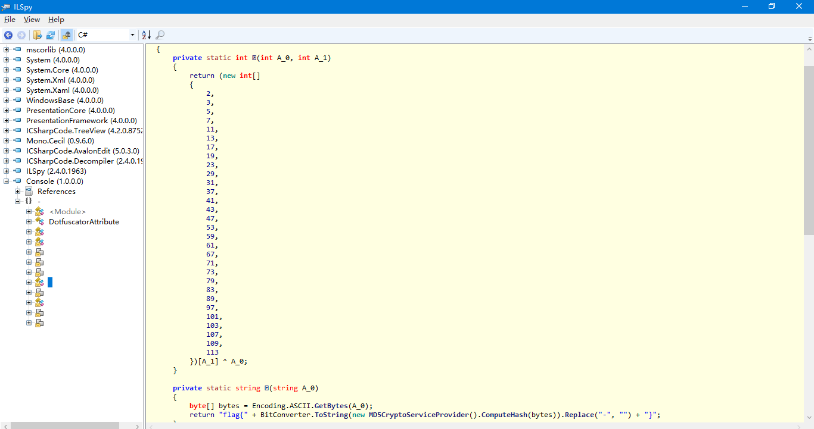
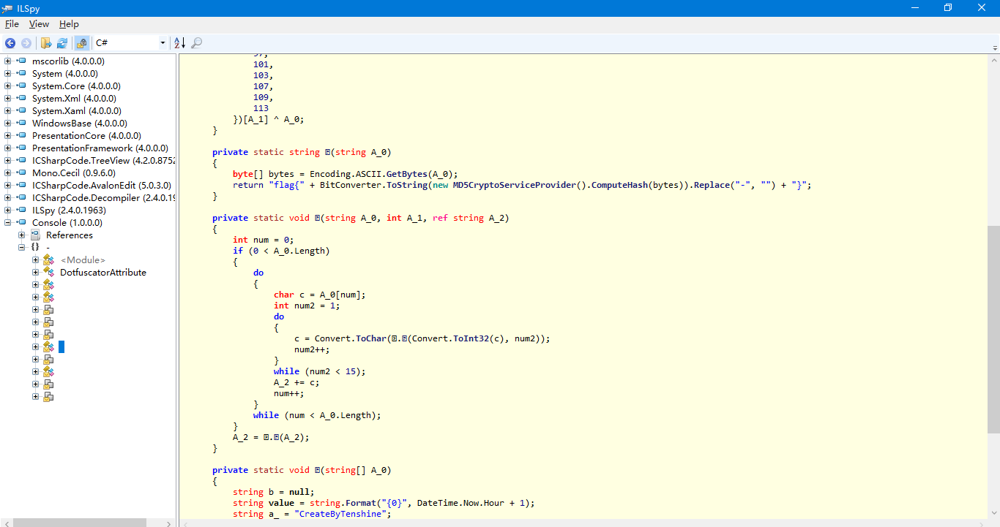
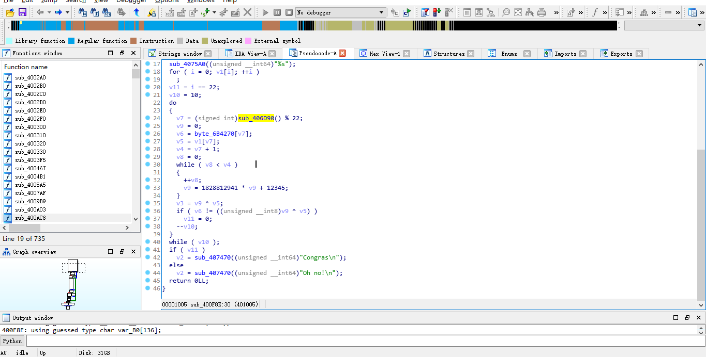
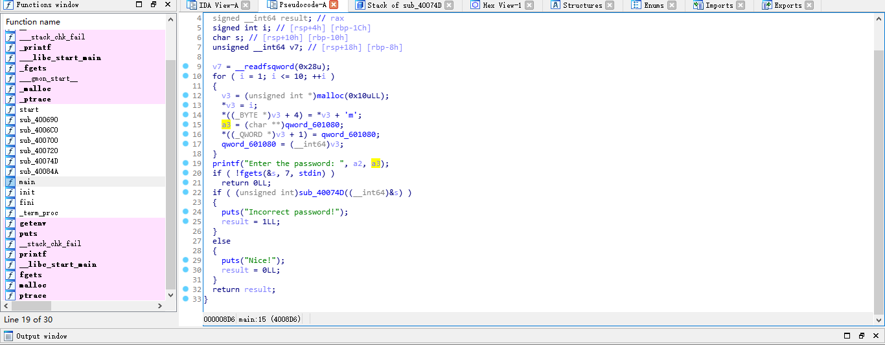
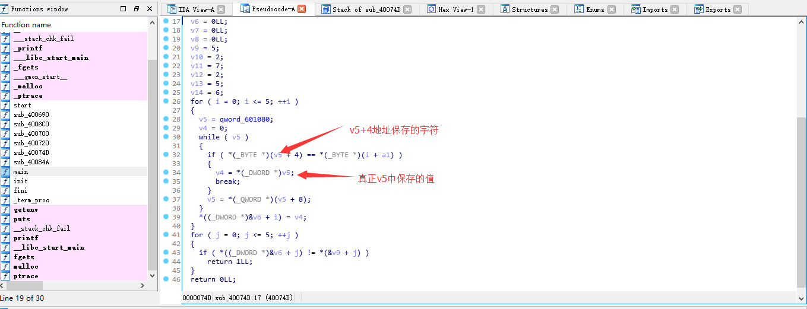
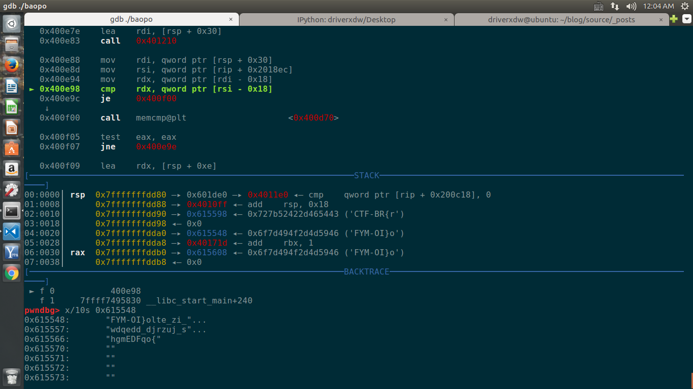

作为新手被师傅们派来打世安杯，以下是部分题目的wp
1.console:下载下来直接扔进ida发现看不懂程序逻辑而且无法反编译，联想到可能是.net文件，扔进die文件识别工具发现果然是.net框架，于是找了一个.net的反编译工具LSPY，反编译后的图片如下：


反编译后来的结果有些函数名没有显示出来，猜想可能是编码的原因。分析了一波代码得到逻辑如下:
先字符串“CreateByTenshine”进行循环取值，每个字符循环14次不断与程序给的那个很长的字符串进行循环亦或操作，之后赋回原值，之后把操作后得到的字符串进行md5加密，然后与输入的字符串进行对比。md5操作后的结果有16为和32位的，还有大写和小写，于是在本地都试了一下，最终发现当32位大写时getflag
脚本如下:
1 | for i in range(len(a)): |
结果md5加密后取md5大写32位加上flag就ok了
2.get_flag:
这道题直接扔到ida中发现连main函数都没有，于是通过查找字符串的交叉引用找到了主函数但发现好复杂(dalao勿喷)，于是扔到od
中打算动态调试一波，逻辑就很明确了，由于逻辑较为简单，这里直接写下:
输入乘以2再减去6之后与输入本身进行亦或操作之后减去(下标乘以2),之后把它和位于0x1115018位置的数据进行对比
写出脚本如下:
s='B9 3A A9 D8 15 8A E7 42 69 90 CA A3 4D D8 D9 C9'.split(' ')
for i in range(len(s)):
for j in range(32,128):
if int(s[i],16)==((j*2-6)^j)-(2*i):
print chr(j),
flag有点怪
3.hackme:
那道题一看发现是elf文件，扔进ida看一波发现没有找到main函数，linux下用file看了一波发现符号表果然被裁掉了，找到不到main没关系啊，查看字符串的交叉引用:

找到主函数分析了下发现主要操作是对输入和根据输入衍生出来的v9进行亦或，然后和v6数组进行比较，可是让我疑惑的是只进行了10次循环，而且v7 = (signed int)sub_406D90() % 22;这句没有看懂，但猜测这句的操作就是获取输入；于是打算先试一下用10次循环做，结果发现跑出了flag头，确定猜测是正确的，于是把循环次数改为22次跑出flag，脚本如下:
1 | for i in range(0,22): |
4.re.bin:
ida反编译:


这道题逻辑也很简单，但这道题给了我很大的启示就是在ida中分析一定要注意区分地址和地址中存放的数值之间的区别，可能是太粗心了，分析了好久，直到最后才发现原来一个是*v5,一个是v5,嗨呀好气，不过最终还是做出来了，其实也是挺简单,就是手动分配16个字节大小的内存空间，头1个字节放下标，后三个字节放601080的地址，最后放字符?(猜的);比较的算法就是把m字符之后的10个字符组成一个列表，然后遍历输入，找到列表中相同字符所对应的下标与5,2,7,2,5,6逐一进行比较，如果一致，则输入就是正确的flag,这题不需要写脚本，直接就可以得到flag:
1 | l=['n', 'o', 'p', 'q', 'r', 's', 't', 'u', 'v', 'w'] |
flag是rotors，就这么简单,哎呦好气.
5.baopo:
这道题我拿到了之后先看一下伪源码，发现哎呦看不懂，然后linux下gdb动态调试，发现了FYM-OI{olte_zi_wdqedd_djrzuj_shgmEDFqo{这串类似flag的东西，然后调试了几个函数，猜测是对输入进行加密，之后与这串
类似flag的东西进行对比，跟踪了一波发现是对输入进行一波加加减减操作，但又不完全是，于是想先根据FYM-OI}
olte_zi_wdqedd_djrzuj_shgmEDFqo{这串字符把基本的flag跑出来（能跑一些出来），跑不出来的进行爆破.本着这个猜想下了几
个断点然后不断比对输入和加密后的结果，首先跑出了CTF头，确定猜测是正确的，于是修改输入继续跑，最终得到flag:CTF-BR{riot_in_public_square_vgzdLIEjd}

总结：最后一题是道apk，分析了下so库找到了get_flag和parase函数，但是也还是没有分析出来，等着以后来填坑吧23333(捂脸捂脸);
学长说这次比赛很水，嗨呀我还要继续努力.
```